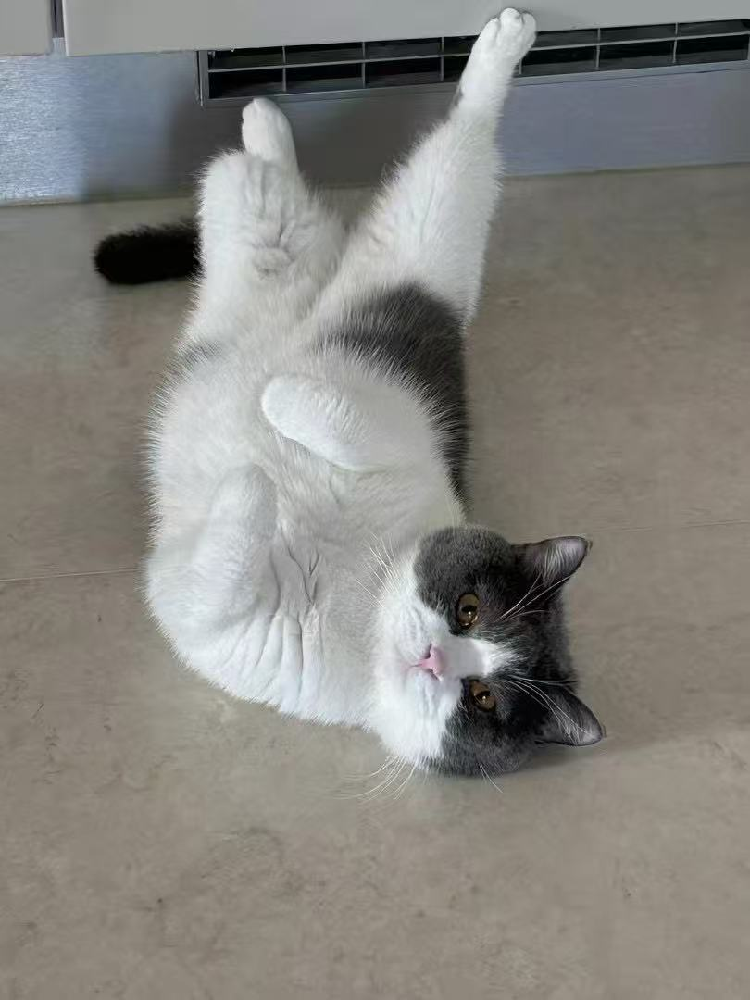

Lesley
Interviews
About
Contact

INTERVIEW / 001
Inside the Mind of an Interaction Design Student
BIO
Lesley is a 7th-term Interaction Design student at ArtCenter College of Design. She is interested in user research
and problem-solving through design, focusing on turning
user insights into clear and practical solutions. Her work often explores how thoughtful design can improve everyday
experiences.
I like solving real problems for people and turning research into
simple solutions.
THE CONVERSATION
01
Why did you decide to study at ArtCenter?
I chose ArtCenter because it's a well-known design school, and its Interaction Design program is highly ranked. I
wanted strong training and real-world projects, so ArtCenter
felt like the right place.
02
Why did you choose to study interaction design?
I like solving real problems for people. I enjoy doing research, understanding their needs, and turning that into
simple solutions. I also like testing my ideas through
research.

03
What is the most difficult thing when taking the class?
Group work at the beginning. I'm more introverted, so I need some time to feel comfortable with new teammates. At
first, I'm quieter, which can sometimes cause small misunderstandings even though I'm fully engaged and
contributing.
04
How do you overcome difficulties when you encounter them?
I give myself time. After a few meetings, I feel more comfortable and start communicating more. Once trust is built,
teamwork becomes much easier.
05
Have you ever chosen other majors?
No. I've always been clear about what I want to do.
KEY INSIGHTS
ArtCenter felt like the right place because it offers strong training and real-world projects.
At first I'm quiet in group work, but once trust is built, teamwork becomes much easier.
I need a little time to feel comfortable with new teammates, but that process helps build better
collaboration.
I've always been clear about what I want to do.
CONNECT WITH LESLEY
.png)
.png)
Interview / 001
March 26, 2026